Aura design guidelines
Version 1, November 2026. One system for every admin screen, for review before it goes into the product.
One system for every admin screen.
/admin/styleguide renders the real Blade components with the live theme. If a pattern is not on that page, it is not part of the system yet.
The rules in plain words, with screenshots taken from that page. When the deck and the page disagree, the page wins and the deck is rebuilt.
Colour, spacing, radius and density come from theme variables that the Settings page controls. Components read them; they do not invent their own.
How a decision lands
Small enough to do every week. Nothing reaches the product without passing through the style guide page first.
A change starts as a screenshot and one sentence: what changes, and why it is better for the person using the admin.
Discussed in Discord with Enes and Bajram. Decided means written down here, with the reason.
The component, its token and its style guide section change in the same pull request, in light and dark.
Screens pick the change up through the component. One-off fixes in a single view are not accepted.
Four rules behind every decision
dense enough.
People work in the admin for hours. Quiet gray surfaces, one blue for action, and enough density to read a whole table without scrolling.
In practice: comfortable by default, compact as an option.
not one-offs.
Spacing, radius and colour come from theme variables. A value typed straight into a template is a bug until it becomes a token.
In practice: --aura-* variables and the primary and gray scales.
equal.
Every component is designed, reviewed and captured in both modes. Dark mode is not an inverted afterthought.
In practice: no component ships without its dark: classes.
visible.
Whatever a setting can change, the style guide shows at its default, and the setting says which variable it drives.
In practice: a settings table on the page and in this deck.
Foundations
Colour, type, spacing and density, corners, depth, icons and dark mode. The values every component is built from.
One blue that acts
The default palette is aura. Each shade shows its contrast against white; 600 and darker carry white text and small text on white.
Primary buttons, checked boxes, toggles and links. One primary button per view.
50 and 100 show selection and badges. They never fill large areas.
Components use primary-*, never a fixed blue, so all 39 palettes work.
Gray does the rest
The default gray palette is slate. Text, lines, fills and the dark-mode surfaces all come from this one scale.
500 is the lightest gray for readable text on white (4.8:1).
At 2.5:1 it fails as text. Use it for hints the field explains itself.
ring-gray-950/10 on light, ring-white/10 on dark, so a ring works on any surface.
Named colours, set in config
theme.colors in config/aura.php becomes --aura-color-* and the Tailwind aura.* colours. Dark replaces them under .dark.
| Token | Light | Dark | Used for |
|---|---|---|---|
primary | primary-600 | primary-600 | Action |
background | #ffffff | #09090b | Page |
panel | #fafafa | #18181b | Cards, inset areas |
border | #e4e4e7 | #3f3f46 | Lines |
text | #18181b | #f4f4f5 | Body text |
muted | #52525b | #a1a1aa | Secondary text |
success | #16a34a | #16a34a | Saved, published |
warning | #d97706 | #d97706 | Needs attention |
danger | #dc2626 | #dc2626 | Errors, deleting |
Success 3.3:1 and warning 3.2:1 are too light for text on white. The words stay in text colour.
Aura's own components still use Tailwind green, red and yellow. Moving them to these tokens is part of the rollout.
The semantic neutrals are zinc, the gray scale is slate. Pick one for panels and text.
39 palettes, one structure
Every palette fills the same slots, so a component that uses the slots works in all of them. Each row: sidebar menu, sidebar, primary, sidebar text, sidebar icon.
Read from src/ThemeTokens.php when the deck is built. Gray has 14 presets of its own; both accept custom with 12 hex shades.
The system font, eight sizes
Aura uses the platform's own sans-serif by default and makes no font request. Shown here in that stack at 1.5 times real size.
Inputs, table cells, help text and buttons all use text-sm. Larger is for titles only.
Medium for labels and buttons, semibold for titles. Bold is not used.
Table headers and sidebar headings, tracked wide. Everything else is sentence case.
theme.font.family and a local stylesheet replace the stack everywhere through --aura-font-sans.
Two densities, four variables
Interface density sets the space inside and between panels. Components read the variables, so one setting changes every screen.
| Variable | Comfortable | Compact |
|---|---|---|
--aura-panel-padding | 1.25rem · 20px | 1rem · 16px |
--aura-panel-small-padding | 0.5rem · 8px | 0.375rem · 6px |
--aura-layout-gap | 1.5rem · 24px | 1rem · 16px |
--aura-section-gap | 1rem · 16px | 0.75rem · 12px |
Compact is for people who live in tables. Both are reviewed.
Anything not covered by a variable uses the Tailwind 4-pixel scale.
Three corner styles
Corner radius sets two variables: one for panels, one for controls. The control radius is always smaller, so nested corners stay parallel.
Panel 0.75rem · 12px · control 0.5rem · 8px
Panel 0.375rem · 6px · control 0.25rem · 4px
Panel 0 · control 0
Cards read --aura-panel-radius; buttons, inputs, selects and sidebar items read --aura-control-radius, so with Square the button and the field next to it turn square together.
Rings for edges, shadows for height
Four levels. Anything that sits on the page has a ring and almost no shadow; only what floats above it casts one.
bg-gray-50, no edge. Read-only fields, code, quiet groups.
ring-1 ring-gray-950/10 shadow-sm. Cards, tables, widgets.
shadow-lg and a ring. Menus, tooltips, toasts.
Dimmed, blurred page and shadow-2xl. Modals and slide-overs.
In dark mode the ring becomes ring-white/10 and the surface steps up one gray (page 900, panel 800); shadows stay but matter less.
One outline set
<x-aura::icon icon="…" size="…" /> draws from the icons in resources/views/components/icon. The page shows all of them.
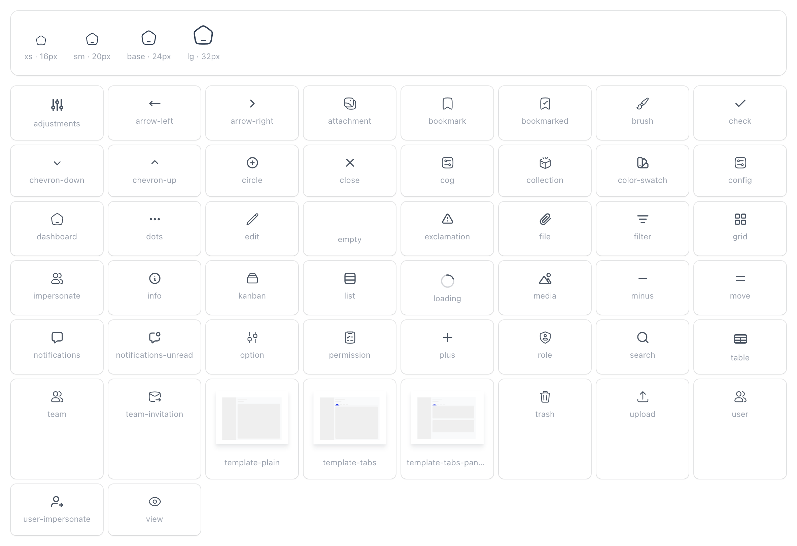
Icons inherit the text colour through currentColor. No filled or duotone mixes.
xs 16sm 20base 24lg 32
57 paths use 1.5 and 25 use 2, so some icons look heavier. Redraw the outliers at 1.5.
An icon-only button needs a tooltip and an aria-label.
Dark is the same system, remapped
Dark mode adds the dark class to the page root. Setting: auto (follow the system), light or dark.
| Role | Light | Dark |
|---|---|---|
| Page | white | gray-900 |
| Panel | white | gray-800 |
| Edge | gray-950 / 10% | white / 10% |
| Text | gray-900 | white |
| Secondary | gray-500 | gray-400 |
| Links, accents | primary-600 | primary-400 |
| Status tint | 100 fill, 700 text | 900/50 fill, 400 text |
Primary buttons keep primary-600 in both modes. Secondary text in dark is gray-400 on gray-900: 7.0:1.
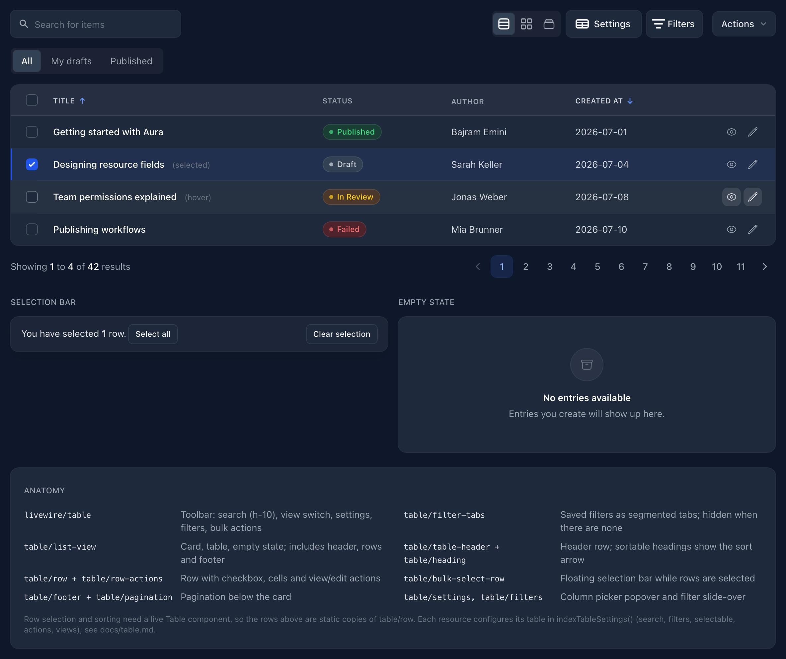
Components
The pieces every screen is made of. Each picture is a screenshot of the style guide page, in the default theme, light and dark.
Buttons
<x-aura::button>: seven variants as sub-components, five sizes, base by default. Every variant in every state, below.
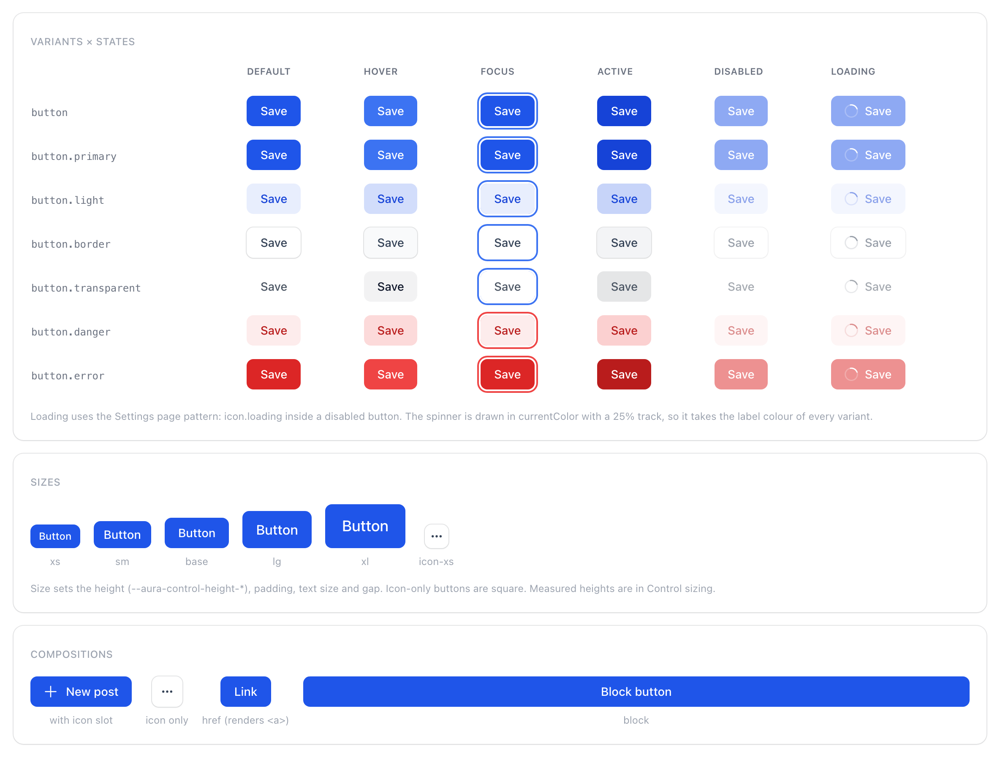
The main action is solid primary. Everything beside it is border or transparent.
A verb and its object: Create post, Save changes. Not OK, not Submit.
button.danger is the quiet tint in a list, button.error the solid confirm in a dialog.
xs 28 in tables, sm 32 for filters and pagination, base 36 in forms and toolbars, lg 44 and xl 52 on empty states and login.
Inputs and selects
The raw inputs in components/input. Resource fields wrap them with a label, a help tooltip and the validation error.
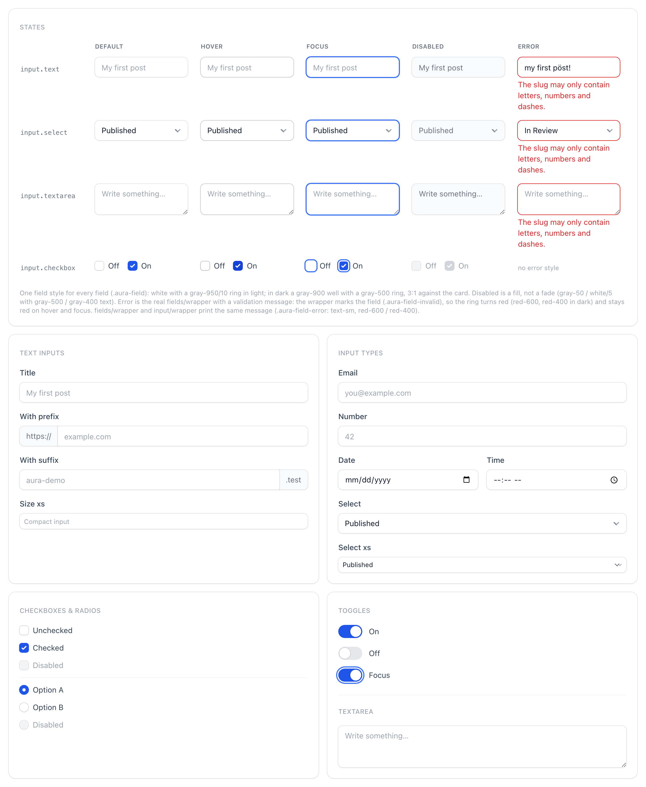
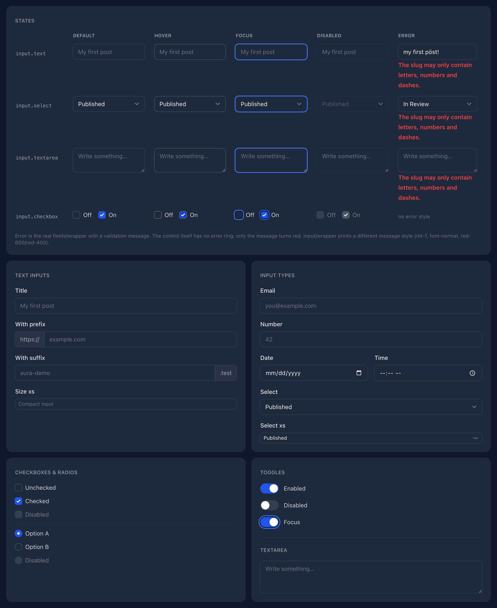
14 px medium. A required field says so in the label, not only in the error.
What is wrong and how to fix it. One style everywhere: text-sm, red-600 (red-400 in dark), AA on the card.
gray-50 background and gray-500 text, so the value stays readable.
Same ring, same height, same radius, plus a chevron. Checkboxes, radios and toggles use primary-600 when on.
One control height
Controls that share a row share a height. Each size reads one --aura-control-height value; red marks a height that differs from the button beside it.
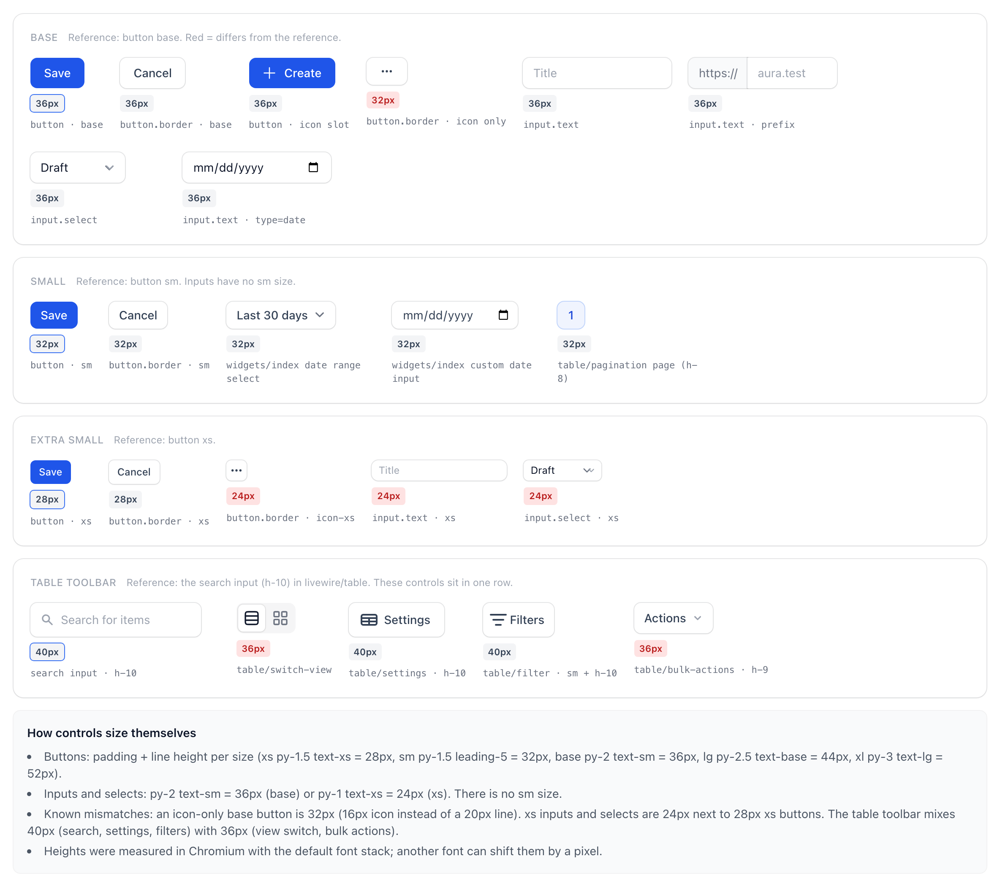
--aura-control-height
| Size | Height | Used by |
|---|---|---|
| xs | 28 px | Row actions in tables |
| sm | 32 px | Filters, pagination, compact density |
| base | 36 px | Forms, dialogs, the table toolbar |
| lg | 44 px | Login, empty states |
Inputs and selects take xs, sm, base and lg; xs is 28 like the xs button.
Width equals the control height: the ··· button is 36 next to 36.
Search, view switch, settings, filters and bulk actions are all base, 36 px.
Tabs
Underline tabs split a long form into panels. Segmented tabs switch saved views of a table, and the view switch picks list or grid.
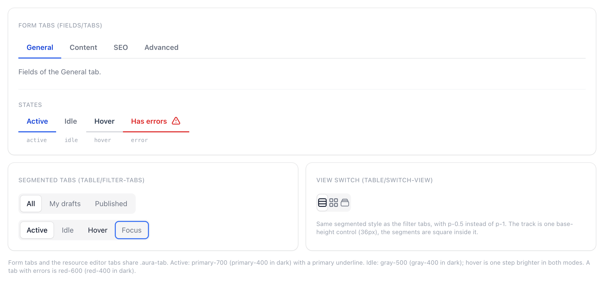
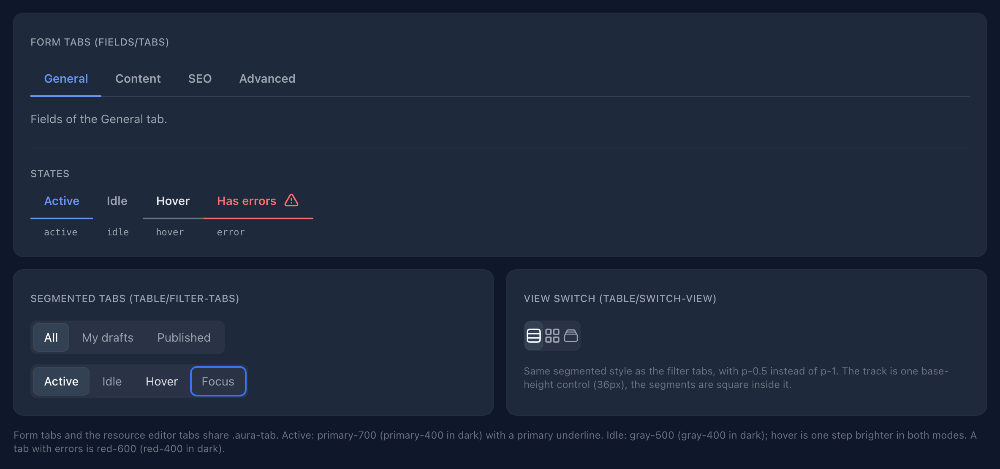
Changing a tab must not save, delete or send anything.
Underline tabs: primary text and a 2 px line. Segmented: a white segment with a ring on a gray-50 track.
One or two words. More than six tabs means the list needs a filter instead.
A tab whose panel has an invalid field turns danger and gets an icon, so the error is found.
Dropdowns and popovers
<x-aura::dropdown> for menus of actions, <x-aura::tippy> for tooltips. Both float: ring and shadow-lg.
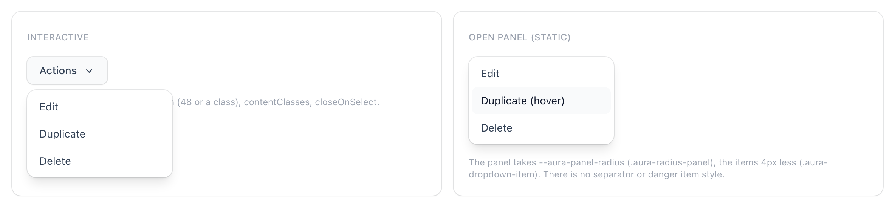
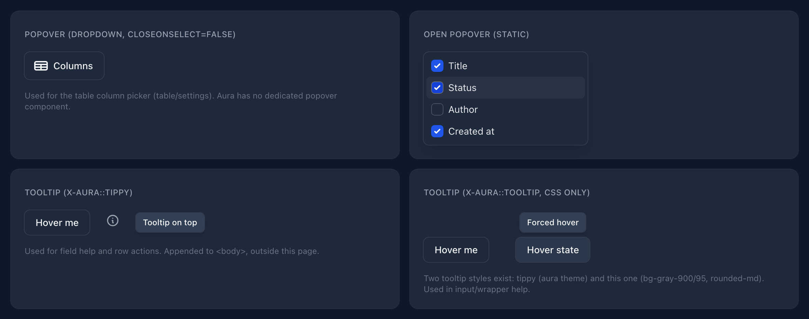
Aligned left or right to the button that opened it, never centred over it.
Delete sits at the bottom after a divider, in danger colour.
If it has a link or a button, it is a popover and opens on click.
Focus returns to the trigger.
Tables
The resource index: toolbar, filter tabs, the table card and pagination. The second row shows the selected state.
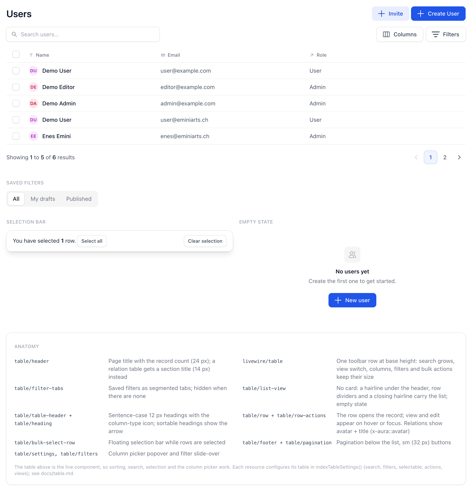
Headers 11 px uppercase gray-500; cells 14 px. Lines between rows, none between columns.
primary-50 row and a 2 px primary edge, plus the checked box.
The same pill as on the badges page, so status reads the same everywhere.
Icon, one line, one hint where the rows would be. Never an empty white box.
Badges
Three shapes: status pills with a dot, sidebar counters, and trend pills on KPI cards.
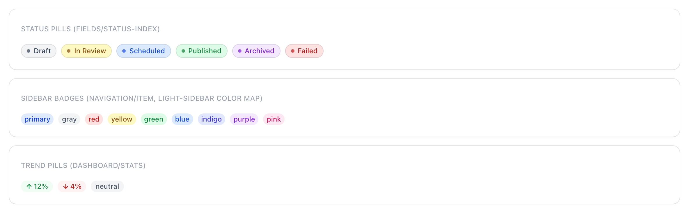
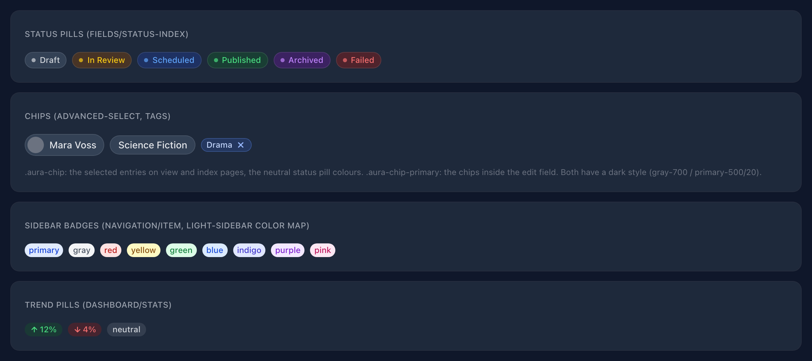
Draft gray, In review yellow, Scheduled blue, Published green, Archived purple, Failed red. Fixed across resources.
100 fill and 700 text in light; 900/50 fill and 400 text in dark.
A badge always has a word. Colour helps, it never carries the meaning alone.
Cards and widgets
.aura-card is the base surface. KPI cards, sparklines and the loading skeleton are the real dashboard widgets.
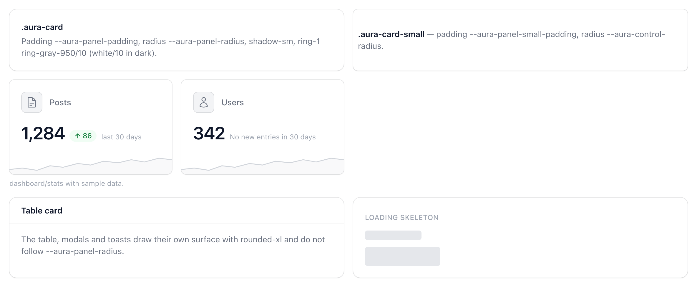
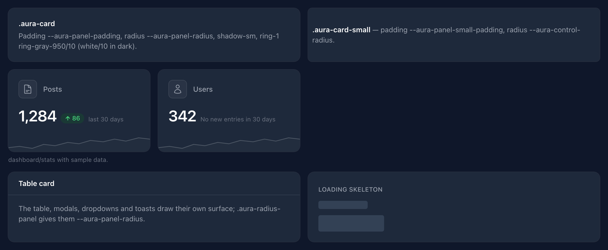
Padding is --aura-panel-padding, corners --aura-panel-radius. Never p-5 rounded-xl by hand.
The value is the largest thing on a KPI card; the label and trend sit around it.
Same size and padding as the loaded card, so nothing jumps.
Modals and slide-overs
<x-aura::dialog> opens either a centred panel or a panel from the right. Both dim and blur the page.
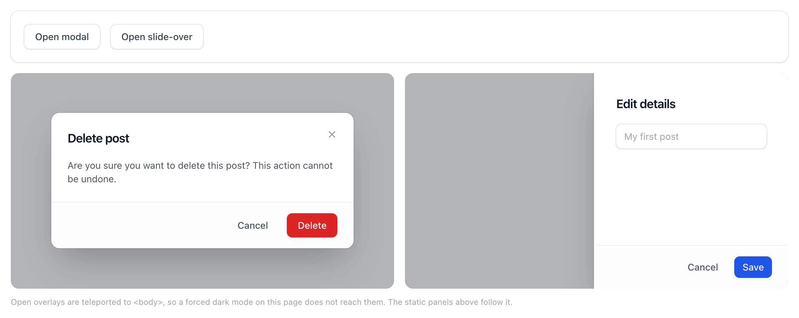
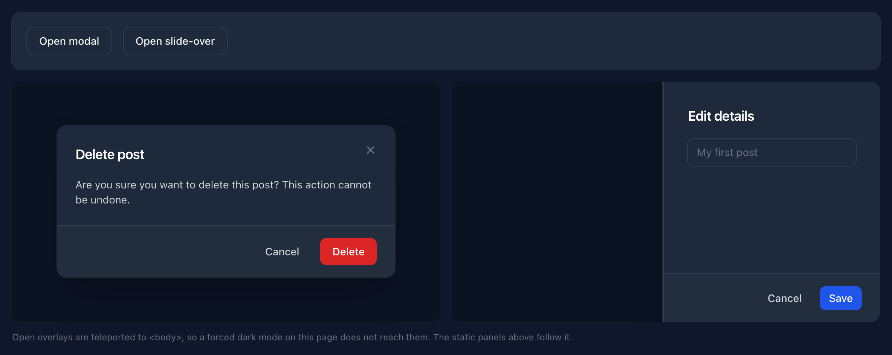
One question, two buttons. The confirm button names the action.
Forms that need the page behind them for context.
Left of the confirm, never a second solid button.
Close icon, Escape and a click outside.
Notifications and feedback
Toasts come from the notify event and the notification component in the layout. Spinners, skeletons and inline alerts cover the rest.
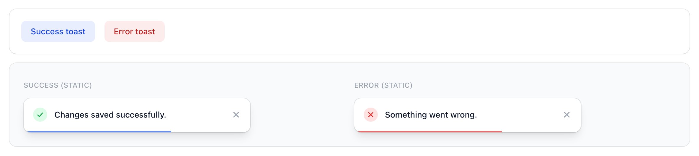
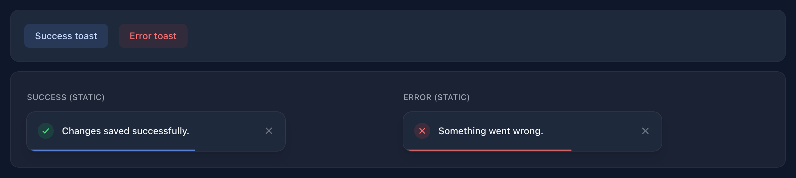
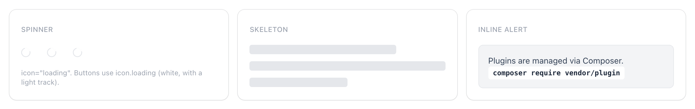
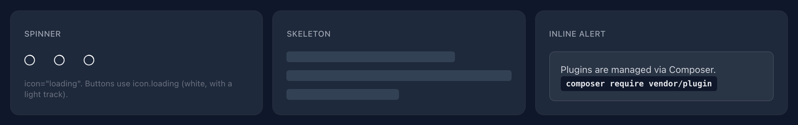
Saved, deleted, sent. Anything that needs a decision is a dialog.
“Changes saved.” The bar shows how long it stays.
A failed save must not disappear before it is read.
A spinner never replaces a whole screen.
Charts
Dashboard widgets: value, sparkline area and bar, bar, donut and pie, drawn with ApexCharts.
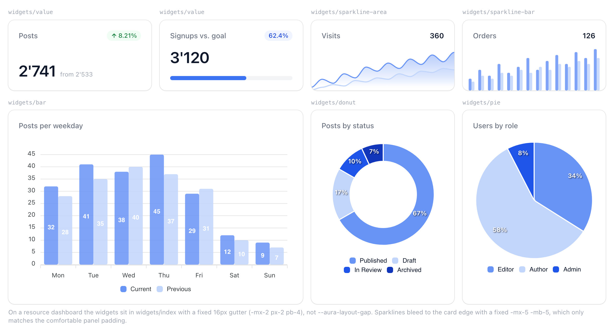
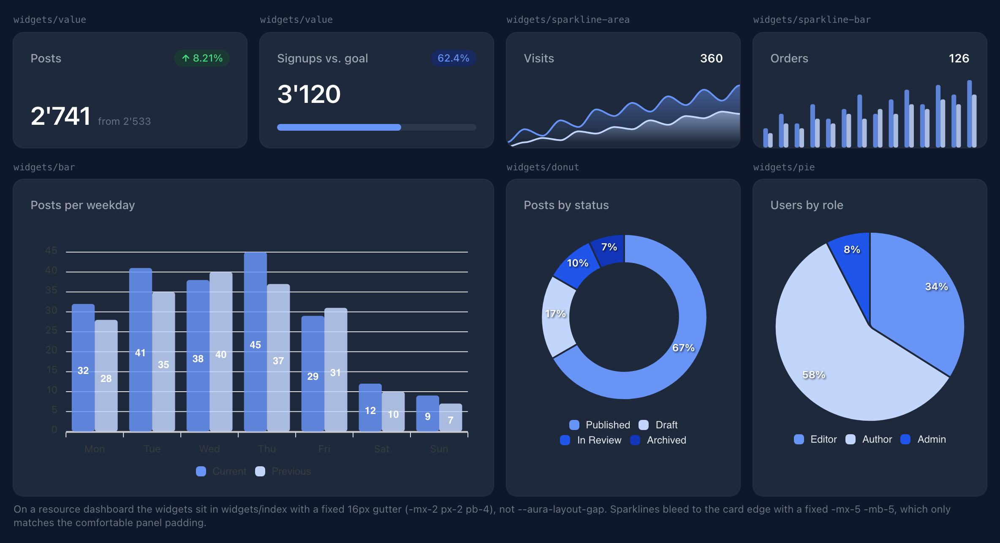
Further series step through the primary scale, then gray. No rainbow.
They show a direction. The number beside them carries the value.
In dark: gray-700 and gray-400. The data is the only strong colour.
Values and axis labels use tabular numbers, so they line up.
Settings → design
Appearance settings do not restyle components. They set a handful of CSS variables, and the components read those.
From a setting to every screen
Package defaults, then config/aura.php, then the saved settings. ThemeTokens resolves them and the layout prints the variables on :root.
--primary-25 … 950, --sidebar-*--gray-25 … 950--aura-font-sansfont-sans utility, everywhere.aura-card, .aura-card-small, layout gaps--aura-panel-radius, --aura-control-radius.dark class, dark --aura-color-*dark: utilitySetting, variable, values
From ThemeTokens::design(). The first value is the default.
| Setting | Variable | Values |
|---|---|---|
| Interface density | --aura-panel-padding | comfortable 20 px · compact 16 px |
--aura-panel-small-padding | comfortable 8 px · compact 6 px | |
--aura-layout-gap | comfortable 24 px · compact 16 px | |
--aura-section-gap | comfortable 16 px · compact 12 px | |
| Corner radius | --aura-panel-radius | rounded 12 px · subtle 6 px · square 0 |
--aura-control-radius | rounded 8 px · subtle 4 px · square 0 | |
| Sidebar size | --aura-sidebar-item-height | standard 36 px · compact 32 px · dense 28 px |
--aura-sidebar-item-padding-x | standard 12 px · compact 8 px · dense 6 px | |
--aura-sidebar-icon-size | standard 20 px · compact 18 px · dense 16 px | |
--aura-sidebar-group-gap | standard 4 px · compact 4 px · dense 2 px | |
--aura-sidebar-heading-gap | standard 20 px · compact 14 px · dense 10 px | |
| Every preset | --aura-control-height | xs 28 px · sm 32 px · base 36 px · lg 44 px · xl 52 px |
Expert mode replaces any of these with a pixel value (expert-panel-radius → --aura-panel-radius, and so on).
Expert mode, and the gaps
Expert mode turns the presets into editable numbers and colours. Some things a team will want to change are not tokens at all yet.
All 11 layout variables and the base control height, one field each. Empty fields keep the preset.
Background, hover, menu, text, icon and icon hover, for light and for dark.
Switching it on starts from the current palette's colours, not from Aura blue.
Fixed Tailwind classes; they ignore the corner setting.
Tailwind defaults, plus one-offs like the 11 px table header.
Seven states, every control
Default, hover, focus, disabled, error, loading and empty are designed with the control, not after it. Buttons, in dark mode:
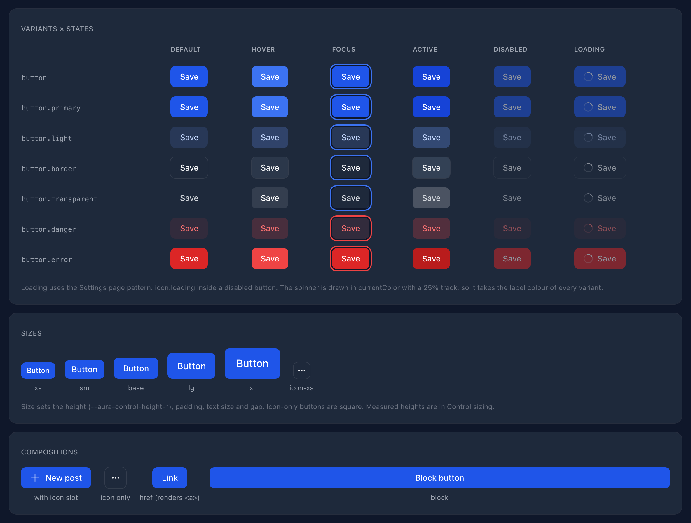
Solid buttons move one shade (600 to 500); quiet ones get a gray-50 fill.
A 2 px primary-500 ring with an offset, on keyboard focus. Never removed.
And cannot be clicked or focused. Say why nearby when it is not obvious.
A spinner replaces the icon; the label and width stay.
Fields: error and empty
The same states on inputs, selects and textareas, in light mode. Error is the state people meet most.
Fields go gray-50 with gray-500 text, so the value stays readable.
The field gets a red ring (red-600, red-400 in dark) that stays on hover and focus, and the message says what is wrong and how to fix it.
Tables and lists show an icon, one line and the next step where the rows would be.
Skeletons match the size of what loads, so nothing jumps.
What this review should settle
Gaps named in the team meeting, and what turned up while building this deck from the live page.
Now on the page; which style goes where is not decided.
The mapping on slide 15 is not written down in the docs yet.
The parts are on the page; rules for filters, bulk actions and column settings are not.
Expert mode, and a list of every Blade component with its props.
Settled: --aura-control-height, xs 28 · sm 32 · base 36 · lg 44, for buttons, inputs and selects alike.
Settled: fields follow --aura-control-radius like buttons.
Components use Tailwind green, red and yellow, not --aura-color-*. Error text is one red now (red-600 / red-400).
button and button.primary look the same; icons mix stroke 1.5 and 2.
Four steps. This deck is the first.
In Discord with Enes and Bajram. Each open question gets a decision or an owner.
Decisions go into the components and tokens first, so every screen follows without one-off fixes.
A pass across all admin pages, light and dark, against this deck. Tracked in IVA-1515.
The style guide page stays the source of truth. The deck is rebuilt from it with three commands.
capture.cjs takes the screenshots, build.cjs assembles the slides, export.cjs writes the PDF. See docs/design/deck/README.md.
The page is the truth.
/admin/styleguide: every component, live, in the current theme.